For more than 12 years, Terraria has gone from being a small indie game, to being one of the most popular game in the world. For many years of its development, Terraria have been keeping up with adding new content per update; as well as having to maintain balance via patch updates. This page will be more about a brief summary of each of the major updates that Terraria has recieved over its lifespan.
History of Major Release Versions
The 1.0 Update [1.0 - 1.1.1]
The first ever release of Terraria. Published on May 11, 2011
As expected from games in their first release, there are only
quite a few items and content to go through. Skeletron
 would
be considered as the final boss of this version.
would
be considered as the final boss of this version.
Since then, Terraria have recieved the 1.1 Update, which introduces us to many more stuffs, including the new fabled
 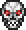
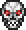


Available Bosses:

 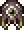
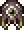
Available NPCS:
 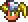
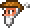
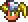
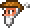


>> See all version history for full details at the official Terraria wiki
would
be considered as the final boss of this version. Since then, Terraria have recieved the 1.1 Update, which introduces us to many more stuffs, including the new fabled
Hard-Mode 
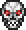
Available Bosses:
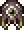
Available NPCS:
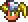
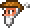
>> See all version history for full details at the official Terraria wiki


The 1.2 Update [1.2 - 1.2.4]
Following the 1.0 - 1.1 Update comes the 1.2 Update, which features
many more content than before. Introducing to us the first-ever
crimson biome - a new world evil that can be possibly obtained when
creating a new world. Other than that, the content has expanded as
well, introducing the new 'Hardmode' which also introduces to us the
Hallow Biome.
With new content also comes along with new bosses as well, Introducing to us with Plantera , Brain of Cthulhu
, Brain of Cthulhu  , Queen Bee
, Queen Bee  , and the Golem
, and the Golem 
It also comes along with brand new NPCs to aid you on your Terraria journey, and make your world a bit more alive than ever.
The version ended with 1.2.4 before another big one approached near 2015...
Available Bosses:
Available NPCS:

 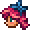
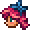
 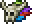
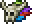


>> See all version history for full details at the official Terraria wiki
With new content also comes along with new bosses as well, Introducing to us with Plantera
, Brain of Cthulhu
, Queen Bee
, and the Golem
It also comes along with brand new NPCs to aid you on your Terraria journey, and make your world a bit more alive than ever.
The version ended with 1.2.4 before another big one approached near 2015...
Available Bosses:
Available NPCS:
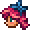
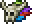
>> See all version history for full details at the official Terraria wiki


The 1.3 Update [1.3.0 - 1.3.5.3]
Perhaps one of the biggest content update that Terraria has recieved
from all of its history. Introducing a plethora of new events to the
mix, and jst like with every update... NEW BOSSES, MORE ITEMS, IMPROVED
GRAPHICS, and so much more...
It is sad however that Ocram has now been removed from this version. But say hello to the NEW FINAL BOSS to challenge to... The Moon Lord , which
can only be beaten by defeating the lunatic cultist
, which
can only be beaten by defeating the lunatic cultist  and the four celestial pillars
and the four celestial pillars


And while at it, how about experiencing about a new mode to spice up your playthrough by introducing the new mode:
Available Bosses:
Available NPCS:
>> See all version history for full details at the official Terraria wiki
It is sad however that Ocram has now been removed from this version. But say hello to the NEW FINAL BOSS to challenge to... The Moon Lord
, which
can only be beaten by defeating the lunatic cultist
and the four celestial pillars
And while at it, how about experiencing about a new mode to spice up your playthrough by introducing the new mode:
Expert Mode. 
Available Bosses:
Available NPCS:
>> See all version history for full details at the official Terraria wiki

Terraria: Journey's End [1.4 - 1.4.4.9]
And now we have reached at the 'End' of the journey, as the developers
would then release their 'final' update to the game... Simply named...
While not as much as big as the 1.3 update, this version still manage to introduce us with much content than ever. Which means, more items, new bosses, new gamemodes, and much more...
Be a collector and experience the fun of
Or be a challenger and experience the new Difficulty of
Or just chill for a while and play a nice game of golf for once...
An update history full of Quality of Life changes, as well as collaborations from other games - as a way of commemorate players that have come a long journey since the beginning.
Available Bosses:

 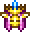
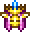
Available NPCS:

>> See all version history for full details at the official Terraria wiki
While not as much as big as the 1.3 update, this version still manage to introduce us with much content than ever. Which means, more items, new bosses, new gamemodes, and much more...
Be a collector and experience the fun of
journey mode 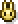
. A mode that makes it similar to the likes of Minecraft's Creative Mode... just that you have to EARN those first... Hence the name: Journey ModeOr be a challenger and experience the new Difficulty of
Master Mode

Or just chill for a while and play a nice game of golf for once...
An update history full of Quality of Life changes, as well as collaborations from other games - as a way of commemorate players that have come a long journey since the beginning.
Available Bosses:
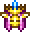
Available NPCS:
>> See all version history for full details at the official Terraria wiki